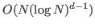
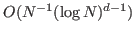
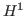
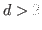
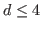
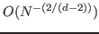
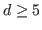

Christoph Pflaum
Discretization of Elliptic Differential Equations Using Sparse Grids and Prewavelets
Friedrich-Alexander-Universität Erlangen-Nürnberg
Department Computer Science 10
Cauerstraße 11
D-91058 Erlangen
christoph.pflaum@fau.de
Rainer Hartmann
Sparse grids can be used to discretize second order elliptic differential
equations on a d-dimensional cube. Using Galerkin discretization, we
obtain a linear equation system with

unknowns. The
corresponding discretization error is

in the

-norm. A major difficulty in using this sparse grid discretization
is complexity of the related stiffness matrix. Consequently, only
differential equations with constant coefficients could be efficiently
discretized using sparse grids for 
. To reduce the complexity of the
sparse grid discretization matrix, we apply pre-wavelets. This simplifies
the implementation of the multigrid Q-cylce. Furthermore, we present a
new sparse grid discretization for Helmholtz equation with a variable
coefficient c. This discretization utilizes a semi-orthogonality
property. The convergence rate of this discretization in -norm is
for 
and

for 
.
mario
2015-02-01